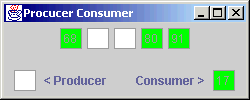
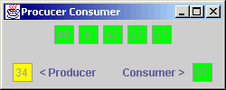
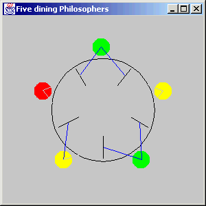
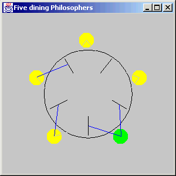

- CSCI 6144. Operating Systems Design.
- Prerequisite: CSCI 6114 or consent of department. Introduction to features
of a large-scale operating system with emphasis on resource-sharing
environments. Computer system organization; resource management;
multiprogramming; multi-processing; file systems; virtual machine concepts;
protection and efficiency.
Professor: Dr. Bing
Semester: 2000 First Summer
Grade: A
Projects:
- Tiny command interpreter. Use OS forking to spawn new processes. Done on
UNIX and Windows NT.
lab1nt.c
lab1unix.c
- Network programming using sockets and Java RMI.
Nick.java
TellNick.java
NickRmiI.java
NickRmi.java
TellNickRmi.java
- Producer Consumer.
ProduceConsume.java
ProducerConsumer.java
Screen shot:


- Solution to the five dining philosophers problem using semaphores.
Semaphore.java
Philosopher.java
Dinner.java
Screen shots:

